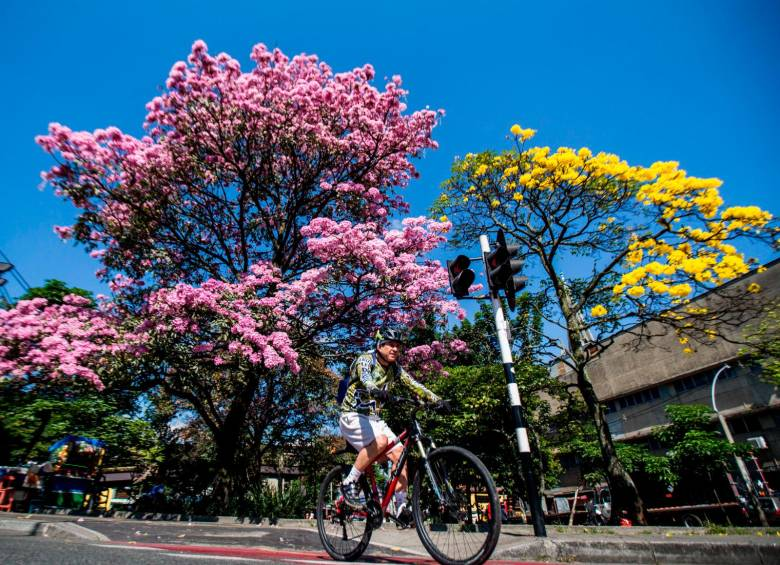
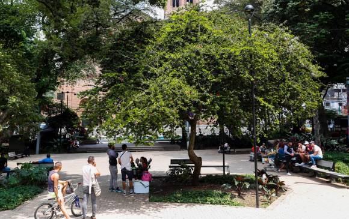

Puntos de interes en Medellin
Clases de Arboles
Fotos

Guayacanes
es el nombre común con el que se conoce a varias especies de árboles nativos de América, pertenecientes a los géneros Tabebuia, Caesalpinia, Guaiacum y Porlieria, que también designa a la madera que producen.
Mas informacion

Cedro
Los cedros constituyen un género (Cedrus) de coníferas pináceas. Son árboles de gran tamaño, de madera olorosa y copa cónica o vertical, muy utilizados para ornamentación de parques.
Mas informacion
Guayacan Amarillo
Es una especie de la familia Bignoniaceae, también conocido con los nombres de 'araguaney','flor amarillo' y 'tajibo', es nativo de los bosques secos de la zona intertropical americana.
Mas Informacion| Arboles | Cantidad | Lugar | |
|---|---|---|---|
| 1.Pisquín-Albizia carbonaria Britton. | 2000 | Carmen de Viboral | |
| 2.Ceiba-Ceiba pentandra (L.) Gaertn. | 2200 | Medellin | |
| 3.Yarumo-Cecropia spp. | 3000 | Bello-Antioquia |